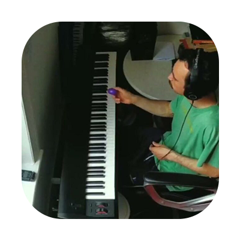
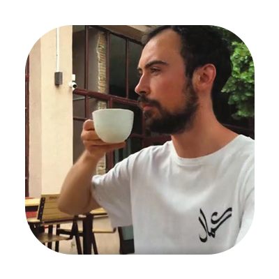
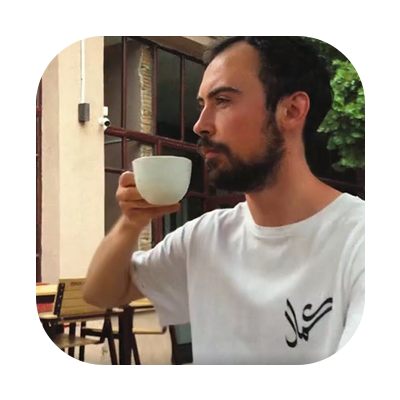

As a kid at school I used to doodle in the back of my notebook, sometimes even in the middle.
In the evenings before bedtime I'd doodle on little post-it papers and then stick them on the wall next to bed, so I could wake up the following morning and see them there. Then I would move them around until I felt they looked right.
I’ve always been very curious. It made me dabble with a number of things - design, art, cooking, photography - but music is something I’ve been doing for as long as I can remember. I always sang, danced and played instruments as a kid and eventually got into production. This led me down the path of writing, releasing and fiddling about with a recorder on. I also like attending concerts, hanging out with artists and reading about the lives of other musicians.
I believe design and music go especially well together. They’re different and they’re similar!
I picked up film photography a few years ago. People often get into film cameras because they can produce warm, grainy and oldschool looking images.
If you take a picture using a phone or a digital camera, you can do an infinite number of takes. On film you only get 36 shots per roll. This limitation makes you really think about what you’re doing. The doubling up of film price in the recent years makes it even more thrilling. So I like to carry a little camera around and document my days and my friends.
 

I always think of things as fuel for inspiration. The main fuels for me are music, conversations, walks and cycling. And then, there’s coffee.
I’ve been drinking coffee for some good years now and I’m getting to a point where I can have it once or twice a week, usually with a writing assignment. This ratio seems to work well for me.
I have grown up within a culture of coffee as opposed to tea, but I do enjoy a cup of tea. I also like hanging out in café’s meeting people or just having some fine me-time with a book or two.
Back home